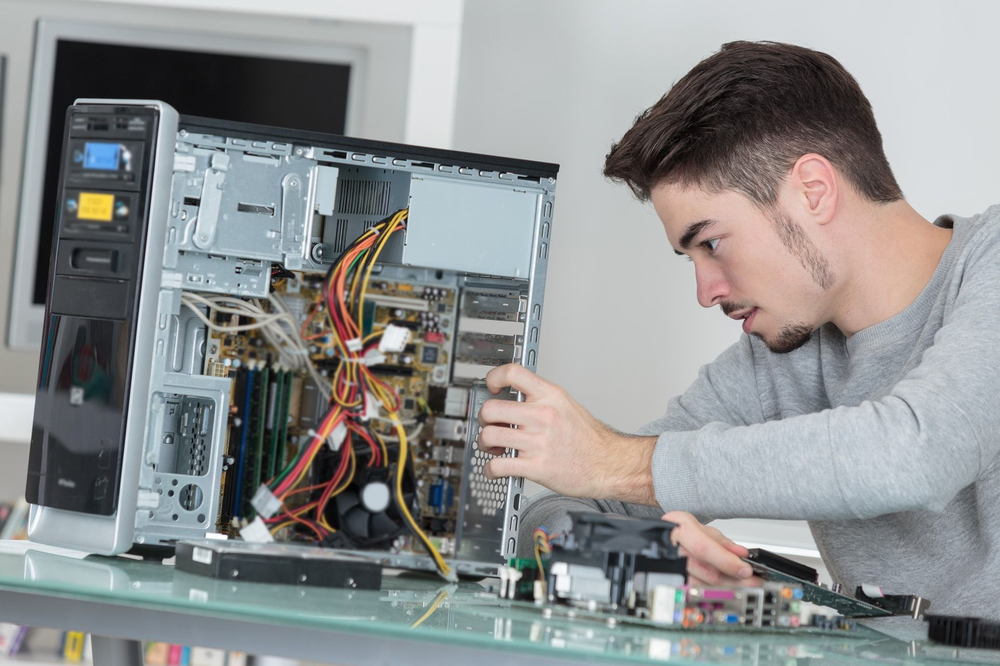

| MICRO MAINTAINANCE FOR ALL NETWORK DEVICES LIKE COMPUTER, SWITCH, ROUTER |  | |||
|---|---|---|---|---|
| Home | About us | Services | Contact | Login |
| Welcome to [Your Company Name], your trusted partner in computer maintenance and IT support. With a passion for technology and a commitment to customer satisfaction, we provide fast, reliable, and affordable computer repair and maintenance services for individuals, small businesses, and home offices. Founded in [Year], our mission is to keep your systems running smoothly so you can focus on what matters most. Whether it's fixing hardware issues, removing viruses, upgrading software, or performing routine maintenance, our skilled technicians are here to help — onsite, remotely, or in our workshop. We pride ourselves on honesty, transparency, and technical excellence. At [Your Company Name], we believe in building long-term relationships with our clients by delivering consistent quality and dependable service. Our Services Include: Hardware repairs and upgrades Virus and malware removal System diagnostics and performance tuning Data backup and recovery Network setup and troubleshooting Preventive maintenance and support contracts | ||||